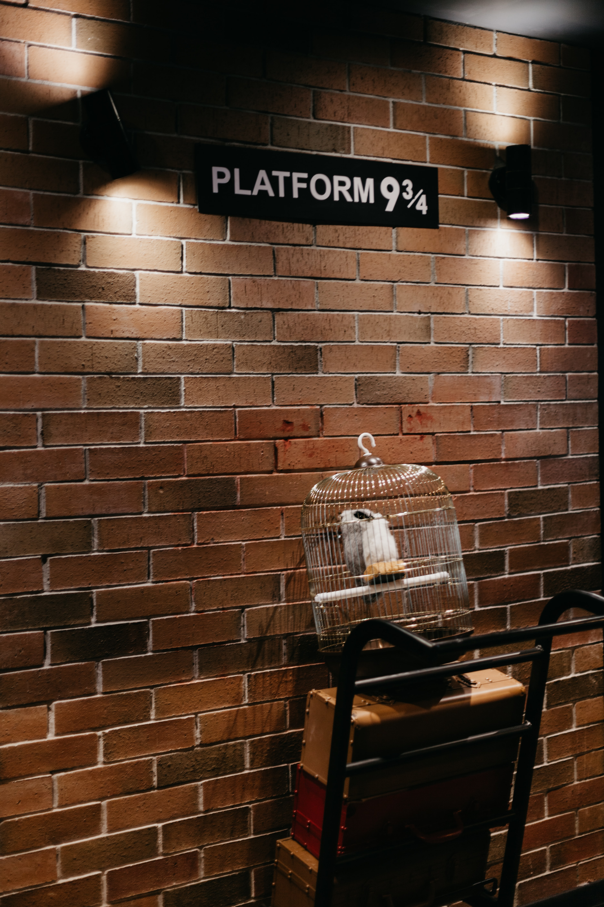

해리 포터(다니엘 래드클리프 분)는 위압적인 버논 숙부(리챠드 그리피스 분)와 냉담한 이모 페투니아 (피오나 쇼 분), 욕심 많고 버릇없는 사촌 더즐리(해리 멜링 분) 밑에서 갖은 구박을 견디며 계단 밑 벽장에서 생활한다. 이모네 식구들 역시 해리와의 동거가 불편하기는 마찬가지. 이모 페투니아에겐 해리가 이상한(?) 언니 부부에 관한 기억을 떠올리게 만드는 달갑지 않은 존재다. 11살 생일이 며칠 앞으로 다가왔지만 한번도 생일파티를 치르거나 제대로 된 생일선물을 받아 본 적이 없는 해리로서는 특별히 신날 것도 기대 할 것도 없다. 11살 생일을 며칠 앞둔 어느 날 해리에게 초록색 잉크로 쓰여진 한 통의 편지가 배달된다. 그 편지의 내용은 다름 아닌 해리의 11살 생일을 맞이하여 전설적인“호그와트 마법학교”에서 보낸 입학초대장이었다. 그리고 해리의 생일을 축하하러 온 거인 해그리드는 해리가 모르고 있었던 해리의 진정한 정체를 알려주는데. 그것은 바로 해리가 굉장한 능력을 지닌 마법사라는 것!
